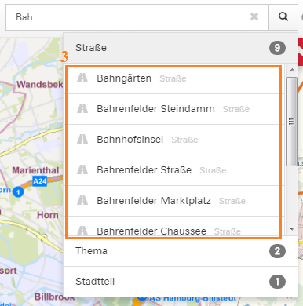
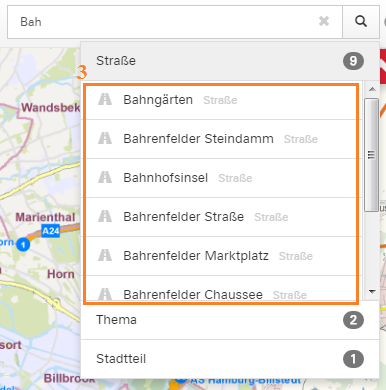

Allgemein
Es müssen mindestens drei Buchstaben in die Suchmaske eingegeben werden (1), um Vorschläge zu erhalten. Es werden maximal fünf Vorschläge, nach dem Zufallsprinzip, angezeigt (2). Ein Icon vor und eine Bezeichnung nach dem Vorschlagstreffer (3) zeigen an, um welche "Trefferkategorie" es sich handelt.

Durch einen Mausklick auf die Lupe (1) oder durch Drücken der Enter-/Returntaste, werden alle Ergebnisse kategorisiert aufgelistet, inklusive der Anzahl der Treffer pro Kategorie (2). Durch einen weiteren Klick auf eine der Kategorien werden die jeweiligen Treffer angzeigt (3).
 

Adresssuche
Geben Sie die gesuchte Adresse in die Suchmaske ein. Durch drücken die Enter-/Returntaste bzw. der Lupe oder durch einen Mausklick auf die Adresse in der Vorschlagsliste, zoomt die Karte zur gesuchten Adresse. Zusätzlich wird die geanue Position die Adresse durch ein Icon auf der Karte angezeigt.
Suche nach allen Hausnummern einer Straße
Geben Sie die entsprechende Straße vollständig in die Suchmaske ein. Erweitern Sie den Namen der Straße um ein Leerzeichen. Dadurch wird die Hausnummernsuche ausgeführt und die Vorschlagsliste füllt sich mit Adressen. Durch drücken die Enter-/Returntaste bzw. der Lupe, werden alle Hausnummern der Straße aufgelistet.
Suche nach Themen / Geo-Daten
Mit der Themensuche können Sie Suchbegriffe eingeben (z.B. Schutzgebiete, Wahlen, Wohnungsbau usw.) und nach verfügbaren Geodaten zu diesem Thema suchen. Wenn Sie ein Resultat auswählen, wird es dirket in der Karte dargestellt.
Flurstückssuche
Über die Flurstrücksnummer und die Gemarkungsnummer können Sie nach Flurstücken suchen. Geben Sie einfach die Gemarkungsnummer gefolgt von der Flurstücksnummer (1) (mit oder ohne Leerzeichen) in die Suchmaske ein und drücken die Enter-/Retruntaste bzw. die Lupe. Daraufhin wird die Karte auf das gesuchte Flurstück zentriert (2).